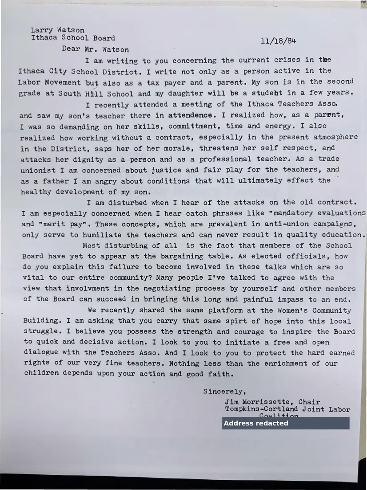

Letter, 1 page
Jim Morrissette to school board member Larry Watson on the teachers' contract
November 18, 1984
Writing as a parent and taxpayer, the chair urges the Ithaca City School Board to negotiate fairly with the Ithaca Teachers Association, criticizing proposals for “mandatory evaluations” and “merit pay.”
Download or cite this itemPages


(open zoom view)A personal home address has been covered on this page.
Read the page text (machine-read, mostly readable)
This text was generated automatically from the photograph and has not been corrected. The image is the authoritative record.
Larry Watson Ithaca School Board 11/18/84 Dear Mr. Watson I am writing to you concerning the current crises in tke Ithaca City School District. I write not only as a person active in the Labor Movement but also as a tax payer and a parent. My son is in the second grade at South Hill School and my daughter will be a studeht in a few years. I recently attended a meeting of the Ithaca Teachers Asso. and saw my son's teacher there in attendence. I realized how, as a parent, I was so demanding on her skills, committment, time and energy. I also realized how working without a contract, especially in the present atmosphere in the District, saps her of her morale, threatens her self respect, and attacks her dignity as a person and as a professional teacher. As a trade unionist I am concerned about justice and fair play for the teachers, and as a father I am angry about conditions that will ultimately effect the healthy development of my son. I am disturbed when I hear of the attacks on the old contract. I am especially concerned when I hear catch phrases like “mandatory evaluations and “merit pay". These concepts, which are prevalent in anti-union campaigns, only serve to humiliate the teachers and can never result in quality education. Most disturbing of all is the fact that members of the School Board have yet to appear at the bargaining table. As elected officials, how do you explain this failure to become involved in these talks which are so vital to our entire community? Many people I've talked to agree with the view that involvment in the negotiating process by yourself and other members of the Board can succeed in bringing this long and painful impass to an end. We recently shared the same platform at the Women's Community Building. I am asking that you carry that same spirt of hope into this local struggle. I believe you possess the strength and courage to inspire the Board to quick and decisive action. I look to you to initiate a free and open dialogue with the Teachers Asso. And I look to you to protect the hard earned rights of our very fine teachers. Nothing less than the enrichment of our ‘i children depends upon your action and good faith. Sincerely, Jim Morrissette, Chair Tompkins-Cortland Joint Labor Address redacted Saas AS sg Pa? fey
See something wrong, or recognize a person or event? Send a correction. If you hold rights in this item or think it should not be public, write to the same address.